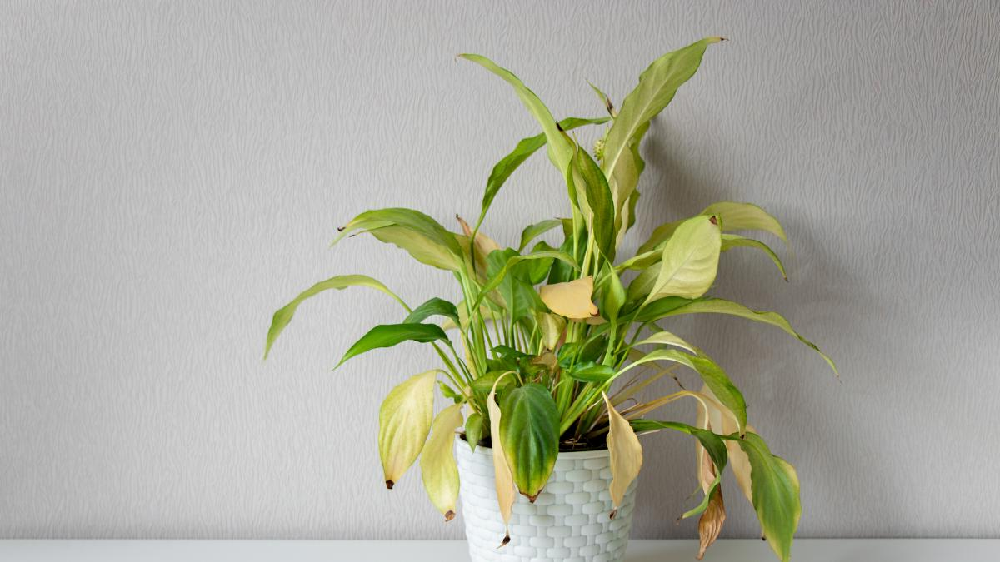
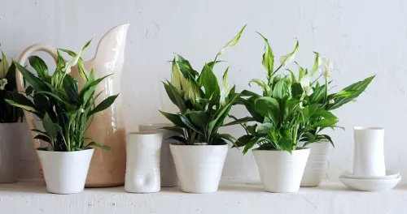

¡Hola!
Hola, mi nombre es Martina, y esta página la creamos para mostrar los avances de nuestra huerta con las materias Aplicaciones Informáticas del profe Ale y Robótica del profe Seba. ¡Esperamos que les guste y que aprendan un poco sobre las plantas y los sensores!
Plantas de nuestra huerta

Albahaca
Temperatura ideal: 20° a 30°C
Necesita mucha luz y riego frecuente.

Frutilla
Temperatura ideal: 18° a 26°C
Crece mejor con humedad constante.

Rabanito
Temperatura ideal: 12° a 20°C
Es una planta rápida, ideal para huertas escolares.

Menta
Temperatura ideal: 17° a 22°C
Muy resistente y aromática.
Estado de la huerta

Planta en mal estado

Planta en buen estado